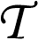

his list provides the ALA/LC standard romanization of many acronyms and initialisms commonly encountered in Hebrew cataloging. The list is arranged by Hebrew abbreviation.
Spaces and apostrophes are ignored in filing. Initial Hebrew definite articles are not ignored. The list includes a few terms that are not abbreviations, but which may be mistakenly interpreted as such.
This collection is by no means exhaustive. The "spelled-out forms" is selective; many initialisms can stand for multiple expressions. Most of the forms in this column reflect possibilities presented in the section on abbreviations in v. 4 of Even-Shoshan. (The four-volume 1988 edition cited in the bibliography is that currently in use at the Library of Congress, but the latest edition available to the cataloger is authoritative.) The choice to express an initialism as an acronym depends on its vocalization as such in this dictionary; this practice is documented in Maher, p. 31.
A number of expressions in the "spelled-out" sections (e.g., av bet din) can be found in Hebrew text both with and without the hyphen connecting the words. For consistency, in this list all hyphens have been omitted except those required by the rules of Hebrew romanization.
The abbreviation "r." when it represents "rav" or "rabi" is capitalized when this term of address immediately precedes a personal name.
Conventions for spacing in abbreviations are outlined in LCRI 1.0C, p. 2. Maher provides some additional comments (p.35). Most likely to be problematic is the injunction in the LCRI: "[i]f two or more distinct initialisms (or sets of initials), acronyms or abbreviations appear in juxtaposition, separate each from the other with a space." Thus, the abbreviation for:
"av bet din  ehilah edoshah" is written as "a.b.d. .." ehilah edoshah" is written as "a.b.d. .." In many cases the determination that parts of an abbreviation are "distinct" is a matter of judgment. The examples below represent LC practice.
This is a revised version of the list published in Judaica Librarianship, Vol. 9, no. 1-2 (Spring, 1994-Winter, 1995). pp. 75-82.
Please communicate any comments, additions or corrections to:
Joan Biella and Rachel Simon
using this form.
|